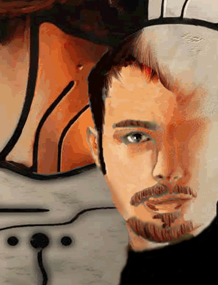

My Profile
 Name: (PDSO Webmaster) Jeremy Prusak also known as Legaiaflame Favorite games: Panzer Dragoon Saga, Panzer Dragoon Orta, Panzer Dragoon Zwei, Panzer Dragoon, Nights into Dreams, Guardian Heroes, Astal, Sonic CD, Secret of Mana, Secret of Mana 3, Treasure Hunter G, Brain Lord, Bahamut Lagoon, Y's 4, Alcahest, Legend of Mana, Illusion of Gaia, Terinigma, Secret of Evermore, Super Mario RPG, Chrono Trigger, Skies of Arcadia, Breath of Fire 4, Shenmue 2, Super Smash Bros. Melee, LOZ Ocarina of Time, Majora's Mask, Miscief Makers, Mystical Ninja Goemon, Goemon's Great Adventure, Castlevania Legacy of Darkness, Elemental Gearbolt, Final Fantasy 10, Ico, Shadow of the Colossus, Shining Force Neo, Dragon Quest 8, Evergrace, Forever Kingdom, Grandstream Saga, Lunar, Lunar 2, Chrono Cross, Brave Fencer Musahi, Rouge Galaxy, Star Wars Knights of the Old Republic, Legend of Legaia, Legaia Dual Saga, Aguaria, Beyond Good and Evil, Lost Odyssey, Infinite Undiscovery, Mass Effect, Super Smash Bros. Brawl, Guild Wars, Samorost 2 and Knytt Stories. Favorite Anime: All Hayao Miyazaki anime which includes: Spirited Away, Princess Mononoke, Nausicaa, Castle in the Sky, My Neighbor Totoro, Kiki's Delivery Service, Porco Roso, Howl's Moving Castle and Conan the Boy of the Future. I also enjoy Last Exile, Inuyasha, Bleach, One Peice, Y's Legacy, Full Metal Alchamist, Escaflowne, Blood+ and Death Note. Info about myself: I'm a big fan of the Panzer Dragoon series. I have the complete Panzer Dragoon trilogy for Sega Saturn, Panzer Dragoon, Panzer Dragoon 2 Zwei, Panzer Dragoon Saga and also Panzer Dragoon Orta for Xbox. I admire Panzer Dragoon Saga the most, for its utter greatness and artistic feel. There is no other game like it, so I decided to make a Website dedicated to it. I'm currently attending college and have gained a considerable amount of web design skill. This Website is a result of that gained knowledge, a tribute to Panzer Dragoon Saga. Feel free to enjoy the site and its content. |